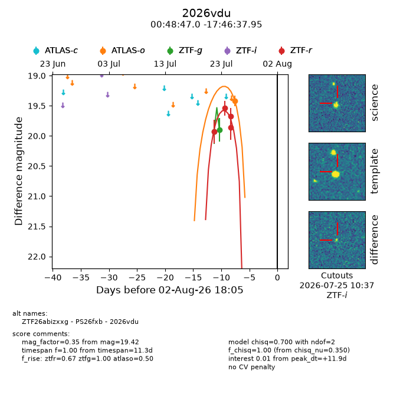
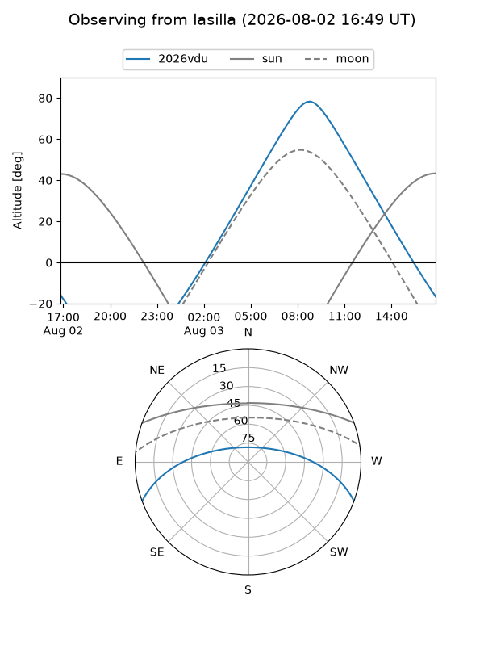
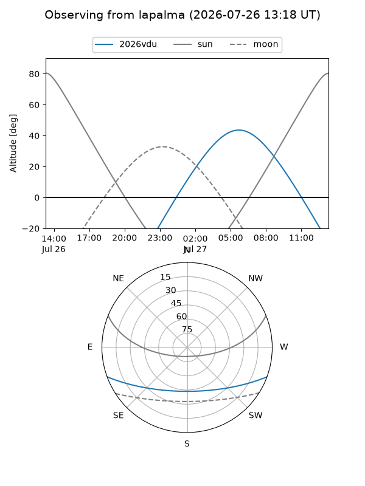
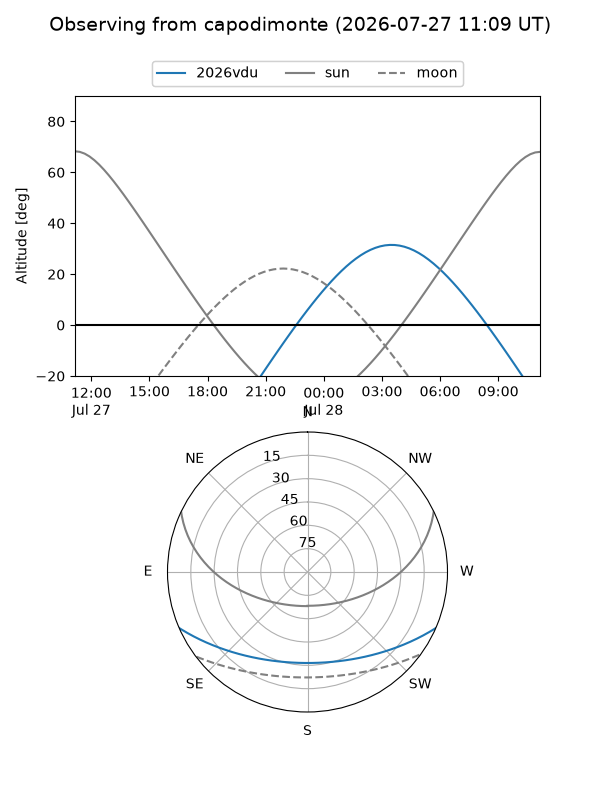
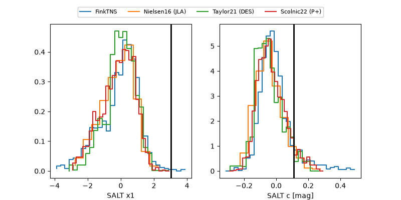

2026vdu
Target 2026vdu at 2026-08-02 18:07
Aliases and brokers:
FINK-ZTF: ztf.fink-portal.org/ZTF26abizxxg
Lasair-ZTF: lasair-ztf.lsst.ac.uk/objects/ZTF26abizxxg
ALeRCE-ZTF: alerce.online/object/ZTF26abizxxg
YSE-PZ: ziggy.ucolick.org/yse/transient_detail/2026vdu
TNS name: wis-tns.org/object/2026vdu
Direct TNS query: direct search
alt names
ZTF26abizxxg (ztf,fink_ztf)
2026vdu (tns,yse)
PS26fxb (panstarrs)
Coordinates:
equatorial (ra, dec) = 12.1959,-17.77721
equatorial (HMS+DMS) = 00:48:47.01,-17:46:37.95
galactic (l, b) = (119.0482,-80.62893)
Flags:
TNS type: nan
peak dt: +11.9
Photometry:
last atlaso=19.42, ztfg=19.90, ztfr=19.68
1 atlaso, 2 ztfg, 4 ztfr detections
Lightcurve

Visibility



Additional plots
